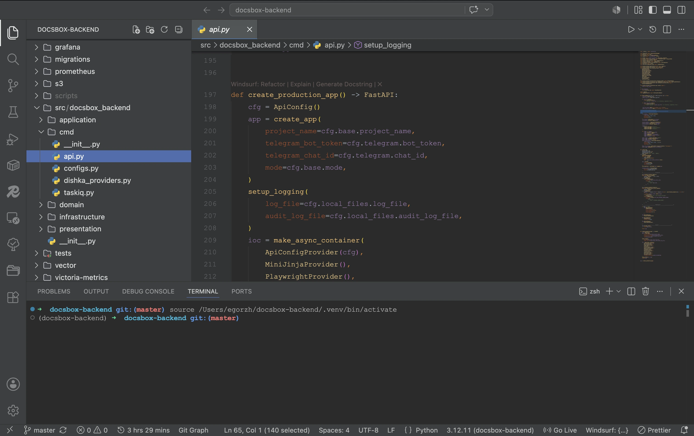
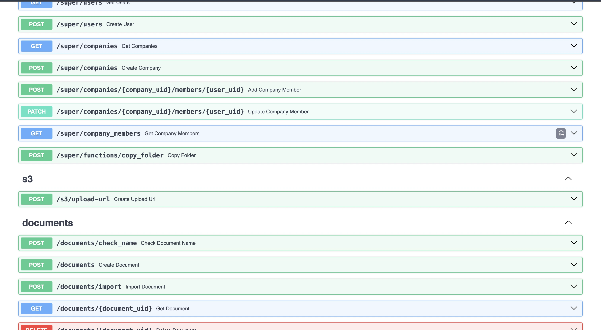
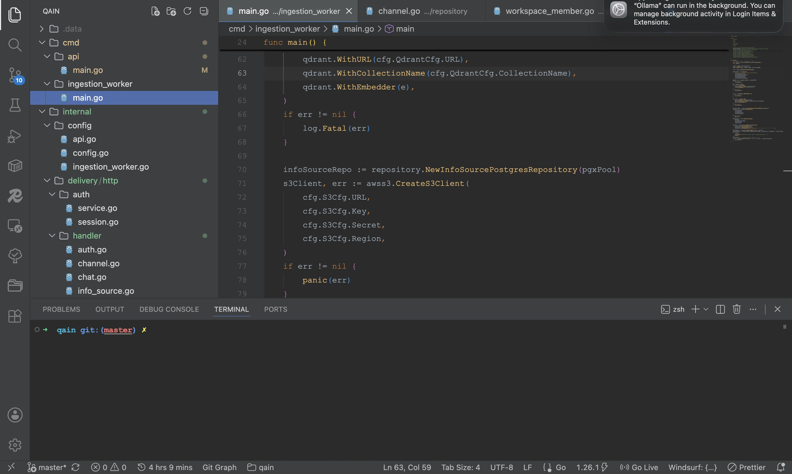
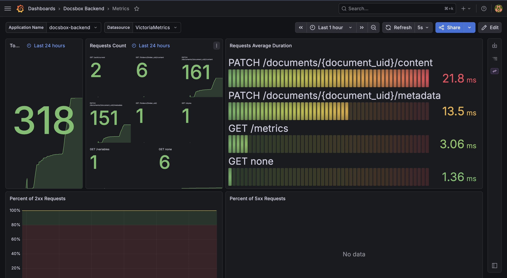
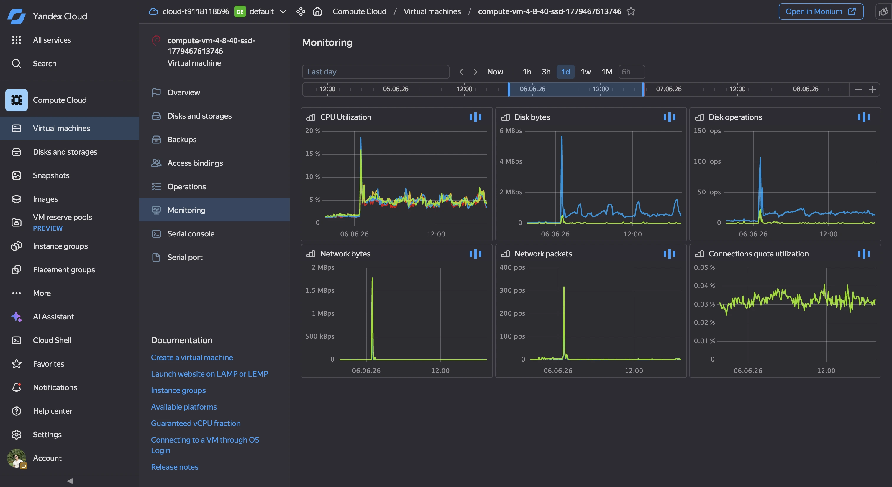

BACKEND DEVELOPER WITH GO AND PYTHON
I build scalable backend applications, implement business logic, and design maintainable software architectures.

I design and implement well-structured APIs, write clear documentation, and integrate third-party services while ensuring security, performance, and maintainability.

I integrate AI into applications by building intelligent features, implementing retrieval pipelines, and creating context-aware solutions that automate workflows and enhance user experience.

I configure monitoring and observability systems to identify performance bottlenecks, detect issues proactively, and ensure reliable application performance.

I automate deployments, configure infrastructure, and build CI/CD pipelines to streamline development and ensure reliable releases.
